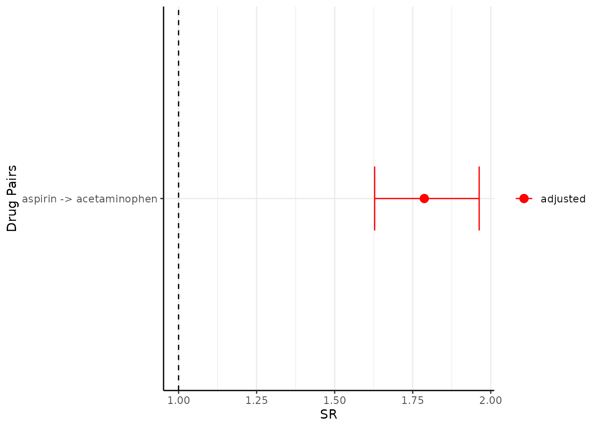
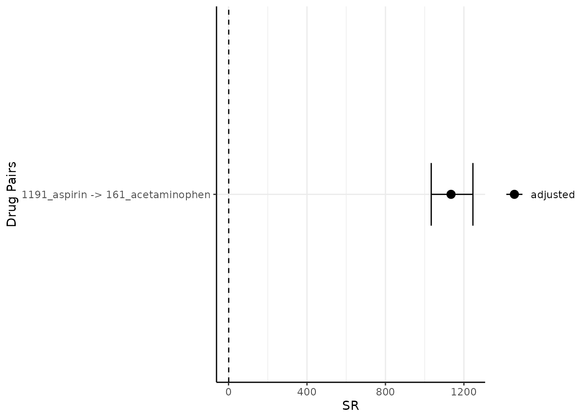
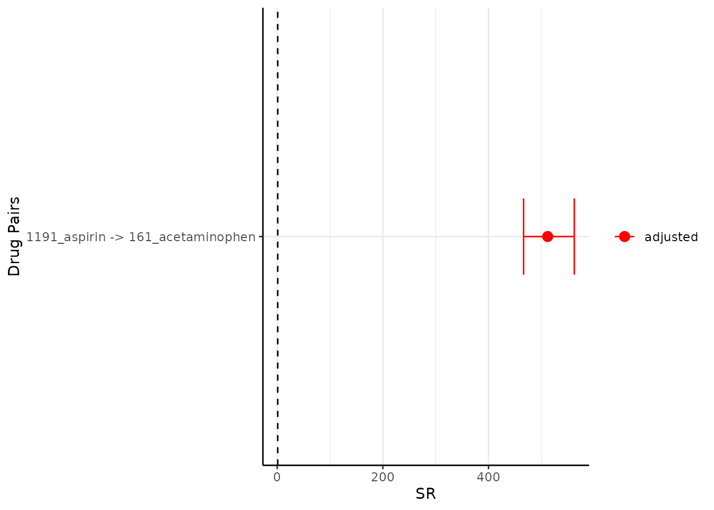
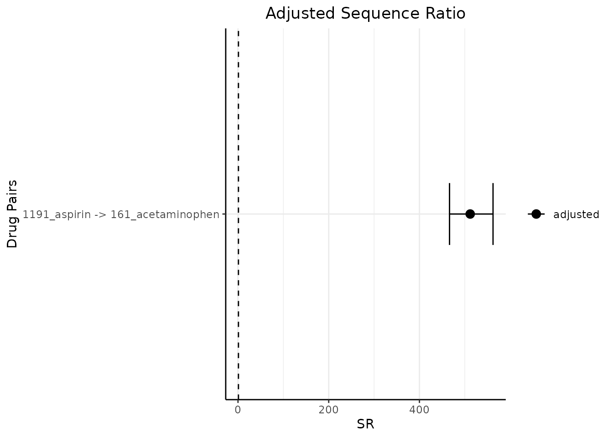
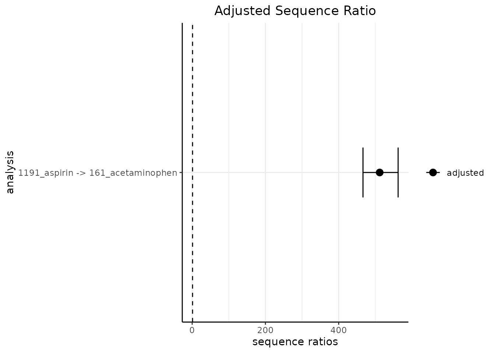

Step 3. Visualise the sequence ratios
Source:vignettes/a04_Visualise_sequence_ratios.Rmd
a04_Visualise_sequence_ratios.RmdIntroduction
In this vignette we will explore the functionality and arguments of a set of functions that will help us to understand and visualise the sequence ratio results. In particular, we will delve into the following functions:
-
tableSequenceRatios(): to generate a table summarising the results. -
plotSequenceRatios(): to plot the sequence ratios.
This function builds-up on previous functions, such as
generateSequenceCohortSet() and
summariseSequenceRatios() function (explained in detail in
previous vignettes: Step 1. Generate a sequence cohort
and Step 2. Obtain the sequence ratios respectively).
Hence, we will pick up the explanation from where we left off in the
previous vignette.
Recall we had the table intersect in the cdm reference and that the results of sequence ratio could produced as follows (Step 2. Obtain the sequence ratios):
result <- summariseSequenceRatios(cohort = cdm$intersect)Table output of the sequence ratio results
The function tableSequenceRatios inputs the result from
summariseSequenceRatios, the default outputs a gt
table.
tableSequenceRatios(result = result)| Database name | Index | Marker | Study population | Index first, N (%) | Marker first, N (%) | CSR (95% CI) | ASR (95% CI) |
|---|---|---|---|---|---|---|---|
| Synthea synthetic health database | Aspirin | Acetaminophen | 1917 | 1,235 (64.4 %) | 682 (35.6 %) | 1.81 (1.65 - 1.99) | 1.79 (1.63 - 1.96) |
Arguments used to suppress columns
By default, it has many columns such as Index (name), Marker (name), Study population, CSR and ASR, some of these columns could be suppressed with relevant parameters. For example if one wants to not display study population, one could do the following:
tableSequenceRatios(result = result,
studyPopulation = FALSE)| Database name | Index | Marker | Index first, N (%) | Marker first, N (%) | CSR (95% CI) | ASR (95% CI) |
|---|---|---|---|---|---|---|
| Synthea synthetic health database | Aspirin | Acetaminophen | 1,235 (64.4 %) | 682 (35.6 %) | 1.81 (1.65 - 1.99) | 1.79 (1.63 - 1.96) |
Or suppress cdmName like so
tableSequenceRatios(result = result,
cdmName = FALSE)| Index | Marker | Study population | Index first, N (%) | Marker first, N (%) | CSR (95% CI) | ASR (95% CI) |
|---|---|---|---|---|---|---|
| Aspirin | Acetaminophen | 1917 | 1,235 (64.4 %) | 682 (35.6 %) | 1.81 (1.65 - 1.99) | 1.79 (1.63 - 1.96) |
There are also .options argument that one may wish to
specify. For example, the user can specify a title:
tableSequenceRatios(result = result,
.options = list(title = "Title"))| Title | |||||||
| Database name | Index | Marker | Study population | Index first, N (%) | Marker first, N (%) | CSR (95% CI) | ASR (95% CI) |
|---|---|---|---|---|---|---|---|
| Synthea synthetic health database | Aspirin | Acetaminophen | 1917 | 1,235 (64.4 %) | 682 (35.6 %) | 1.81 (1.65 - 1.99) | 1.79 (1.63 - 1.96) |
Similarly, subtitle and caption can also be
defined this way.
Modify type
Instead of a gt table, the user may also want to put the sequence ratio results in a flex table format (the rest of the arguments that we saw for a gt table also applies here):
tableSequenceRatios(result = result,
type = "flextable")Database name |
Index |
Marker |
Study population |
Index first, N (%) |
Marker first, N (%) |
CSR (95% CI) |
ASR (95% CI) |
|---|---|---|---|---|---|---|---|
Synthea synthetic health database |
Aspirin |
Acetaminophen |
1917 |
1,235 (64.4 %) |
682 (35.6 %) |
1.81 (1.65 - 1.99) |
1.79 (1.63 - 1.96) |
Or a tibble:
tableSequenceRatios(result = result,
type = "tibble")
#> # A tibble: 1 × 8
#> `Database name` Index Marker `Study population` `Index first, N (%)`
#> <chr> <chr> <chr> <chr> <chr>
#> 1 Synthea synthetic health… Aspi… Aceta… 1917 1,235 (64.4 %)
#> # ℹ 3 more variables: `Marker first, N (%)` <chr>, `CSR (95% CI)` <chr>,
#> # `ASR (95% CI)` <chr>One may also wish to change the style of the output, see the R package visOmopResults for more information on how to define a style. The default style inherits from visOmopResults, however the user may set it to NULL for the gt/flextable default styling.
tableSequenceRatios(result = result,
type = "flextable",
style = NULL)Database name |
Index |
Marker |
Study population |
Index first, N (%) |
Marker first, N (%) |
CSR (95% CI) |
ASR (95% CI) |
|---|---|---|---|---|---|---|---|
Synthea synthetic health database |
Aspirin |
Acetaminophen |
1917 |
1,235 (64.4 %) |
682 (35.6 %) |
1.81 (1.65 - 1.99) |
1.79 (1.63 - 1.96) |
Plot output of the sequence ratio results
Similarly, we also have plotSequenceRatios() to
visualise the results.
plotSequenceRatios(result = result)
By default, it plots both the adjusted sequence ratios (and its CIs) and crude sequence ratios (and its CIs). One may wish to only plot adjusted one like so (note since only adjusted is plotted, only one colour needs to be specified):
Modify onlyaSR and colours
plotSequenceRatios(result = result,
onlyaSR = T,
colours = "black")
One could change the colour like so:
plotSequenceRatios(result = result,
onlyaSR = T,
colours = "red")
Modify plotTitle
One could set the title like so:
plotSequenceRatios(result = result,
onlyaSR = T,
plotTitle = "Adjusted Sequence Ratio",
colour = "black")
Modify labs
One could also change the \(x\) and \(y\) labels like so:
plotSequenceRatios(result = result,
onlyaSR = T,
plotTitle = "Adjusted Sequence Ratio",
colour = "black",
labs = c("sequence ratios", "analysis"))